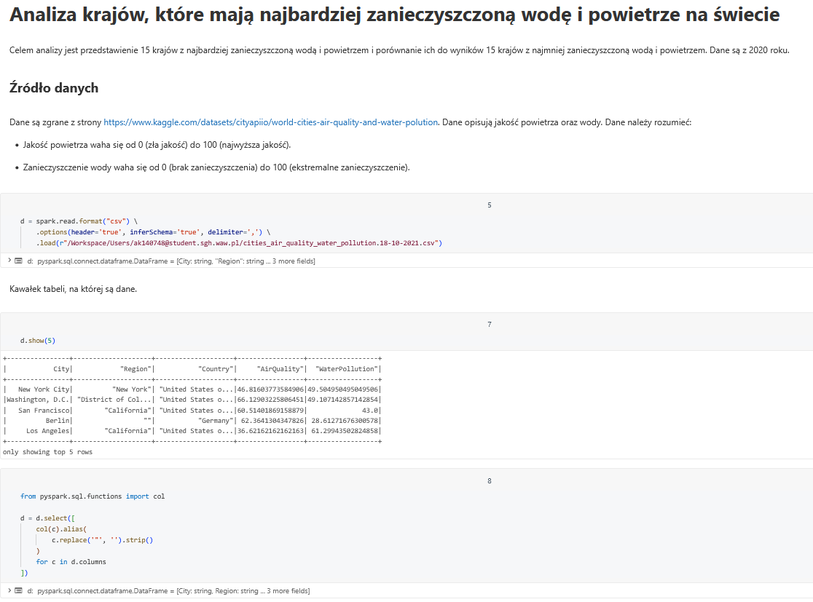
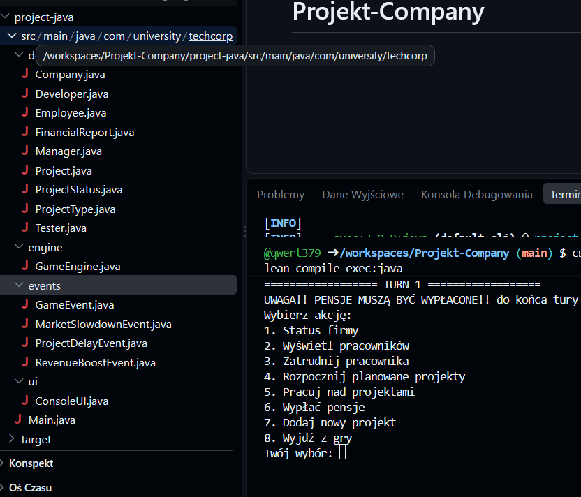

About Me
My name is Aleksandra Kaczorek, and I am 28 years old. I come from Elblag, a city in northern Poland. I graduated with a Bachelor's degree in Chinese Studies (Sinology), which gave me the opportunity to learn not only the Chinese language but also the history, culture, and traditions of China. It was a challenging field of study that taught me discipline, patience, and the importance of understanding different cultures.
Currently, I am a second-year part-time Master's student in Big Data. I decided to continue my education because I enjoy learning new things and I believe that data analysis and modern technologies are becoming increasingly important in today's world. Although combining studies with everyday responsibilities is not always easy, I am determined to develop my skills and gain knowledge that will help me in my future career.
Technical Skills
R - ggplot2, dplyr, shiny, plotly, officer
Python - pandas, numpy, matplotlib
SQL - PL/SQL
SAS - SAS Enterprise Guide, SAS Enterprise Miner
Java - object-oriented programming, classes, objects, methods, problem solving
Projects

Analysis of Countries with the Most Polluted Water and Air in the World
I created a data analysis project in Databricks focused on identifying the countries with the highest levels of water and air pollution worldwide.
I worked with environmental data to compare pollution levels between countries and identify the areas most affected by poor air and water quality.
This project helped me improve my data analysis skills and taught me how to work with environmental datasets. I learned how to process, compare, and visualize data in Databricks and how to draw meaningful conclusions from large datasets.
View Project
Java Project
The main goal of this project was to develop my programming skills in Java and gain a better understanding of object-oriented programming. I focused on learning how to structure a Java application, organize code into classes and methods, and solve programming problems in a clear and efficient way.
The project also helped me develop my problem-solving and logical thinking skills. I learned how to break a larger problem into smaller tasks, test my code, identify errors, and improve my solutions. Working on the project gave me more confidence in writing and debugging Java programs.
View Project